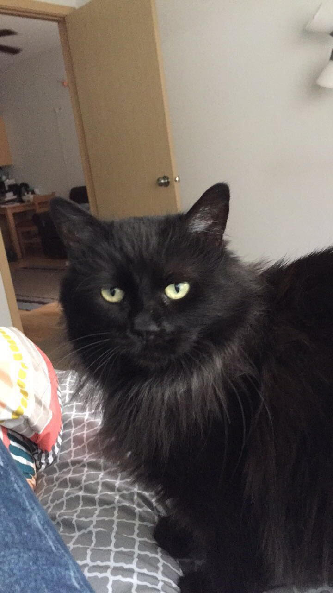

I just recently adopted a two-year old cat named Periwinkle. She was in a garage with about 40 other cats because the woman who owned the home wanted to make sure that all the strays in her area had food and shelter. When the woman passed away all 40-some of these cats were taken to a no-kill shelter in Des Moines, where I adopted her.

She is quite petite at only 9 pounds, and is honestly the sweetest cat I've ever met.